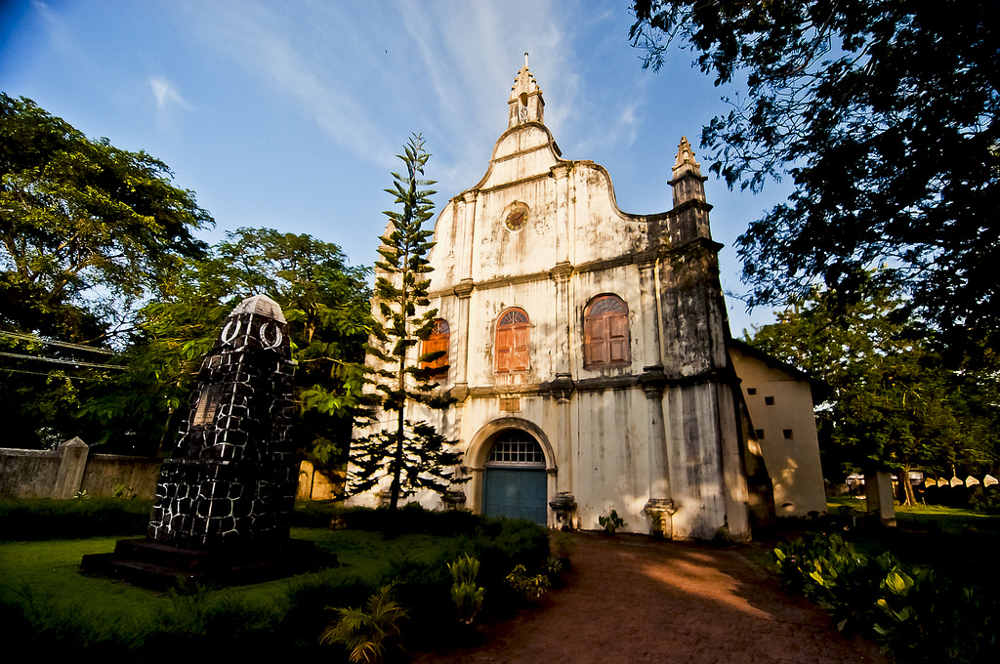

<html>
    <head>
        <style>
            .myDiv{
                position: relative;
                border: 5px outset blue;
                height: 400;
                text-align: center;
                background-size:100%;
                background-image: url("FK.jpeg");
               
            }

            .container{
                display:flex;
                flex-wrap: nowrap;
                background-color: red(49, 167, 65);
                text-align: center;
            }

            .container > div{
                
                background-color:red(49, 167, 65);
                width: 1250px;
                height: 45px;
                margin: 3px;
                text-align: center;
            }

            .container2{
                display:flex;
                flex-wrap: nowrap;
                background-color:black;
                padding-bottom: 30%;
                text-align: center;
            }
            .container2 > div{
                position: relative;
                background-color:white;
                width: 1250px;
                height: 175px;
                margin: 3px;
                text-align: left;
            }

        </style>
        </html>
        <body>
            <div class = "myDiv">

                <h1 style="color: yellow; font-size: 120; font-family:sans-serif;">FORTKOCHI</h1>
         


<h3 style="color: yellow;"><b><p>Fort Kochi, the western part of the Kochi city of Ernakulam district in Kerala. It is about 12 km away from Ernakulam Town. Fort Kochi   has played an important role in the history of Kerala. Fort Kochi also has several attractions like the Santa Cruz Basilica. Fort Kochi also houses many historical monuments such as the St. Francis Church, the first church of Vasco da Gama, the Dutch Seminary, the China Vela and many others.</p><b></h3>
                <h3 style="color: azure;">.</h3>
            </div>
            <div class="container">
            <div><h2 style="color: blue;">Historic places</h2></div>
            <div><h2 style="color: blue;">TO VISIT</h2></div>
            </div>

            <div class="container2">
                <div>
                    
                    
                    <h3 style="color: aqua;">Church of Vasco da Gama</h3>
                    <P style="color: white;">Saint Francis Church, in Fort Kochi (Fort Cochin), Kochi, originally built in 1503, is one of the oldest European churches in India[1] and has great historical significance as a witness to the European colonial ambitions in the subcontinent.[2][3] The Portuguese explorer Vasco da Gama died in Kochi in 1524 when he was on his third visit to India. His body was originally buried in this church, but after fourteen years his remains were moved to Lisbon and now located at Jerónimos Monastery.[4][5]</P></br>
    
                </div>
                <div>
                    
                    
                    <h3 style="color: aqua;"> FORT KOCHI </h3>
                    <P style="color: white;">Fort Kochi takes its name from the Fort Manuel of Cochin,[1] the first European fort on Indian soil, controlled by the Portuguese East Indies.[2] This is part of a handful of water-bound islands and islets toward the south-west of the mainland Kochi, and collectively known as Old Cochin or West Cochin. Adjacent to this is the locality of Mattancherry. In 1967, these three municipalities along with a few adjoining areas, were amalgamated to form the Kochi Municipal Corporation.

Fort Kochi is rich in heritage and culture, and is a prominent tourist destination for both domestic and international travellers- being ranked as ninth among the top 25 in National Geographic’s Top Tourist Destinations To Explore In 2020.[3]</P>
                </div>
            </div>
        </body>
        </html>